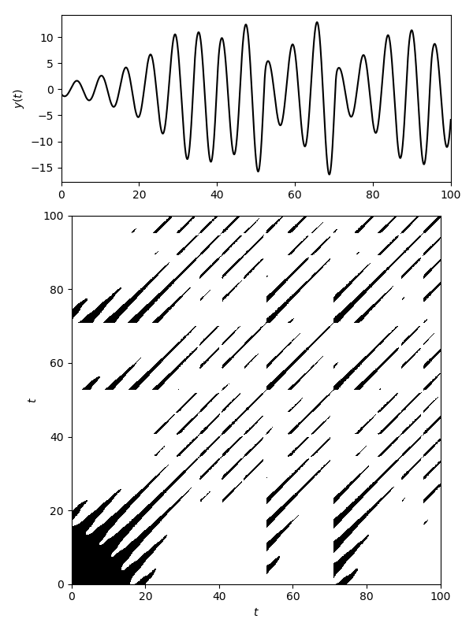

Recurrence Plots
Recurrence Matrices
A Recurrence plot (which refers to the plot of a matrix) is a way to quantify recurrences that occur in a trajectory. A recurrence happens when a trajectory visits the same neighborhood on the phase space that it was at some previous time.
The central structure used in these recurrences is the (cross-) recurrence matrix:
where d(x[i], y[j]) stands for the distance between trajectory x at point i and trajectory y at point j. If x\equiv y then R is called recurrence matrix, otherwise it is called cross-recurrence matrix. There is also the joint-recurrence variant, see below.
With RecurrenceAnalysis you can use the following functions to access these matrices
#
RecurrenceAnalysis.recurrencematrix — Function.
recurrencematrix(x, ε; kwargs...)
Create a recurrence matrix from an embedded time series.
Description
The recurrence matrix is a numeric representation of a "recurrence plot" [1, 2], in the form of a sparse square matrix of Boolean values.
x must be Dataset or a Vector or Matrix with data points in rows (possibly representing and embedded phase, space; see embed). If d(x[i], x[j]) ≤ ε (with d the distance function), then the cell (i, j) of the matrix will have a true value. The criteria to evaluate distances between data points are defined by the following keyword arguments:
scale: a function of the distance matrix (seedistancematrix), or a fixed number, used to scale the value ofε. Typical choices aremaximumormean, such that the thresholdεis defined as a ratio of the maximum or the mean distance between data points, respectively. Use1to keep the distances unscaled (default).fixedrate::Bool=false: a flag that indicates ifεshould be taken as a target fixed recurrence rate (seerecurrencerate). Iffixedrateis set totrue,εmust be a value between 0 and 1, andscaleis ignored.metric: metric of the distances, as indistancematrix.
See also: crossrecurrencematrix, jointrecurrencematrix and use recurrenceplot to turn the result of these functions into a plottable format.
References
[1] : N. Marwan et al., "Recurrence plots for the analysis of complex systems", Phys. Reports 438(5-6), 237-329 (2007).
[2] : N. Marwan & C.L. Webber, "Mathematical and computational foundations of recurrence quantifications", in: Webber, C.L. & N. Marwan (eds.), Recurrence Quantification Analysis. Theory and Best Practices, Springer, pp. 3-43 (2015).
#
RecurrenceAnalysis.crossrecurrencematrix — Function.
crossrecurrencematrix(x, y, ε; kwargs...)
Create a cross recurrence matrix from the time series x and y.
The cross recurrence matrix is a bivariate extension of the recurrence matrix. For the time series x, y, of length n and m, respectively, it is a sparse n×m matrix of Boolean values, such that if ∥x[i] – y[j]∥ ≤ ε, then the cell (i, j) of the matrix will have a true value.
See recurrencematrix for details, references and keywords. See also: jointrecurrencematrix.
#
RecurrenceAnalysis.jointrecurrencematrix — Function.
jointrecurrencematrix(x, y, ε; kwargs...)
Create a joint recurrence matrix from the time series x and y.
The joint recurrence matrix considers the recurrences of the trajectories of x and y separately, and looks for points where both recur simultaneously. It is calculated by the element-wise multiplication of the recurrence matrices of x and y. If x and y are of different length, the recurrences are only calculated until the length of the shortest one.
See recurrencematrix for details, references and keywords. See also: crossrecurrencematrix.
Plottable Format
As you can tell from the above documentation strings, the recurrence matrices are stored as sparse matrices with boolean values. To create the recurrence plots, one needs to obtain a full form out of them.
This functionality is supported by the following function:
#
RecurrenceAnalysis.recurrenceplot — Function.
recurrenceplot(x [, bwcode]; width::Int, height::Int, exactsize=false)
Transform the recurrence matrix x into a full matrix suitable for plotting as a grayscale image. By default it returns a matrix with the same size as x, but switched axes, containing "black" values in the cells that represent recurrent points, and "white" values in the empty cells.
The numeric codes for black and white are given in a 2-element tuple as a second optional argument. Its default value is (0.0, 1.0), i.e. black is coded as 0.0 (no brightness) and white as 1.0 (full brightness). The type of the elements in the tuple defines the type of the returned matrix. This must be taken into account if, for instance, the image is coded as a matrix of integers corresponding to a grayscale; in such case the black and white codes must be given as numbers of the required integer type.
The keyword arguments width and height can be given to define a custom size of the image. If only one dimension is given, the other is automatically calculated. If both dimensions are given, by default they are adjusted to keep an aspect proportional to the original matrix, such that the returned matrix fits into a matrix of the given dimensions. This automatic adjustment can be disabled by passing the keyword argument exactsize=true.
If the image has different dimensions than x, the cells of x are distributed in a grid with the size of the image, and a gray level between white and black is calculated for each element of the grid, proportional to the number of recurrent points contained in it. The levels of gray are coded as numbers of the same type as the black and white codes.
Example
Here is a recurrence plot of a full trajectory of the Roessler system:
using DynamicalSystems ro = Systems.roessler(a=0.15, b=0.20, c=10.0) N = 2000; dt = 0.05 tr = trajectory(ro, N*dt; dt = dt, Ttr = 10.0) R = recurrencematrix(tr, 5.0; metric = "euclidean") Rp = recurrenceplot(R)
2001×2001 Array{Float64,2}:
1.0 1.0 1.0 1.0 1.0 1.0 1.0 1.0 … 0.0 0.0 0.0 0.0 0.0 0.0 0.0
1.0 1.0 1.0 1.0 1.0 1.0 1.0 1.0 0.0 0.0 0.0 0.0 0.0 0.0 0.0
1.0 1.0 1.0 1.0 1.0 1.0 1.0 1.0 0.0 0.0 0.0 0.0 0.0 0.0 0.0
1.0 1.0 1.0 1.0 1.0 1.0 1.0 1.0 0.0 0.0 0.0 0.0 0.0 0.0 0.0
1.0 1.0 1.0 1.0 1.0 1.0 1.0 1.0 0.0 0.0 0.0 0.0 0.0 0.0 0.0
1.0 1.0 1.0 1.0 1.0 1.0 1.0 1.0 … 0.0 0.0 0.0 0.0 0.0 0.0 0.0
1.0 1.0 1.0 1.0 1.0 1.0 1.0 1.0 0.0 0.0 0.0 0.0 0.0 0.0 0.0
1.0 1.0 1.0 1.0 1.0 1.0 1.0 1.0 0.0 0.0 0.0 0.0 0.0 0.0 0.0
1.0 1.0 1.0 1.0 1.0 1.0 1.0 1.0 0.0 0.0 0.0 0.0 0.0 0.0 0.0
1.0 1.0 1.0 1.0 1.0 1.0 1.0 1.0 0.0 0.0 0.0 0.0 0.0 0.0 1.0
⋮ ⋮ ⋱ ⋮ ⋮
0.0 0.0 0.0 0.0 0.0 0.0 0.0 0.0 1.0 1.0 1.0 1.0 1.0 1.0 1.0
0.0 0.0 0.0 0.0 0.0 0.0 0.0 0.0 1.0 1.0 1.0 1.0 1.0 1.0 1.0
0.0 0.0 0.0 0.0 0.0 0.0 0.0 0.0 1.0 1.0 1.0 1.0 1.0 1.0 1.0
0.0 0.0 0.0 0.0 0.0 0.0 0.0 0.0 … 1.0 1.0 1.0 1.0 1.0 1.0 1.0
0.0 0.0 0.0 0.0 0.0 0.0 0.0 0.0 1.0 1.0 1.0 1.0 1.0 1.0 1.0
0.0 0.0 0.0 0.0 0.0 0.0 0.0 0.0 1.0 1.0 1.0 1.0 1.0 1.0 1.0
0.0 0.0 0.0 0.0 0.0 0.0 0.0 0.0 1.0 1.0 1.0 1.0 1.0 1.0 1.0
0.0 0.0 0.0 0.0 0.0 0.0 0.0 0.0 1.0 1.0 1.0 1.0 1.0 1.0 1.0
0.0 0.0 0.0 0.0 0.0 0.0 0.0 0.0 … 1.0 1.0 1.0 1.0 1.0 1.0 1.0
using PyPlot; figure(figsize = (6, 8)) ax1 = subplot2grid((3,1), (0,0)) plot(0:dt:N*dt, tr[:, 2], "k"); xlim(0, N*dt); ylabel("\$y(t)\$") ax2 = subplot2grid((3,1), (1, 0), rowspan = 2) imshow(Rp, cmap = "Greys_r", extent = (0, N*dt, 0, N*dt)) xlabel("\$t\$"); ylabel("\$t\$"); tight_layout() subplots_adjust(hspace = 0.2)

Distances
The distance function used in recurrencematrix and co. can be specified either as a string or as a Metric instance from Distances. In addition, the following function returns a matrix with the cross-distances across all points in one or two trajectories:
#
RecurrenceAnalysis.distancematrix — Function.
distancematrix(x [, y = x], metric = Chebyshev())
Create a matrix with the distances between each pair of points of the time series x and y using metric.
The time series x and y can be Datasets or matrices with data points in rows. The data point dimensions (or number of columns) must be the same for x and y. The returned value is a n×m matrix, with n being the length (or number of rows) of x, and m the length of y.
The metric can be identified by a string, or any of the Metrics defined in the Distances package. The list of strings available to define the metric are:
"max"or"inf"for the maximum or L∞ norm (Chebyshev()in theDistancespackage, used by default)."euclidean"for the L2 or Euclidean norm (Euclidean()inDistances)."manhattan","cityblock","taxicab"or"min"for the Manhattan or L1 norm (Cityblock()inDistances).